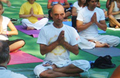

Йога не е религия, а път
който води до здрав дух в здраво тяло . Добре дошли в
интернет страницата
на курсовете по Йога - Кайваля Пловдив.
Йога инструктор е Георги Яръмов.
на курсовете по Йога - Кайваля Пловдив.
Йога инструктор е Георги Яръмов.
Йога - График
Йога,
Вторник и Четвъртък
От 08:00 часа и от 09:00 ч.
с. Марково - читалище "Алеко Константинов"
Понеделник, Сряда и Петък
Пловдив, ул. "Богомил" 31
От 17:30 часа и от 19:00 часа

Йога
на
Cмеха
Движението за Йога на смеха достигна над 66 държави.
От скоро, България е част
от този пъстър свят на веселие
и радост. [ + ]

Биография
на
Биография
на
Георги Яръмов
1994 – 1997 Медицински Колеж към ВМИ Пловдив, завършва с отличен успех специалност „Рехабилитация” [ + ]